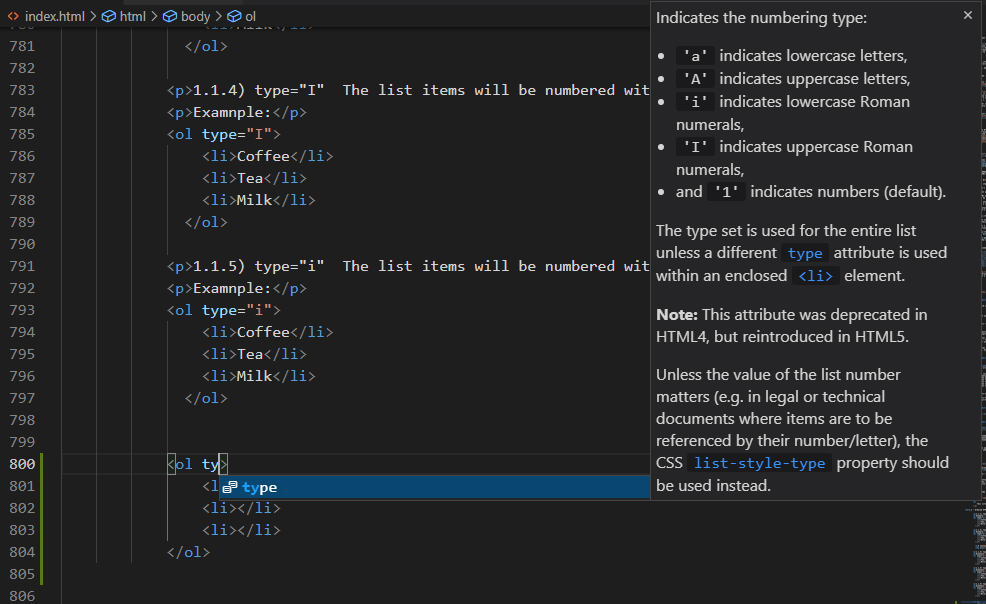
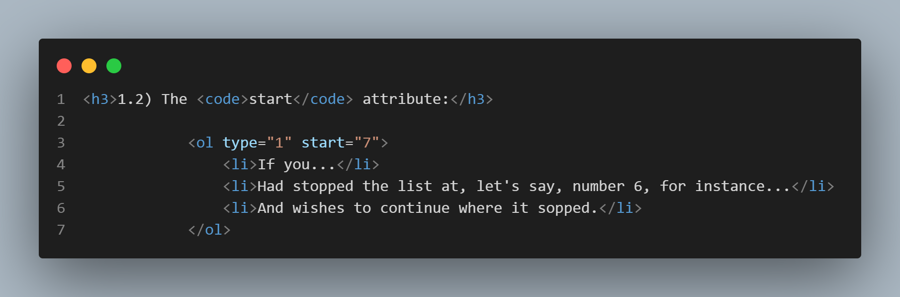
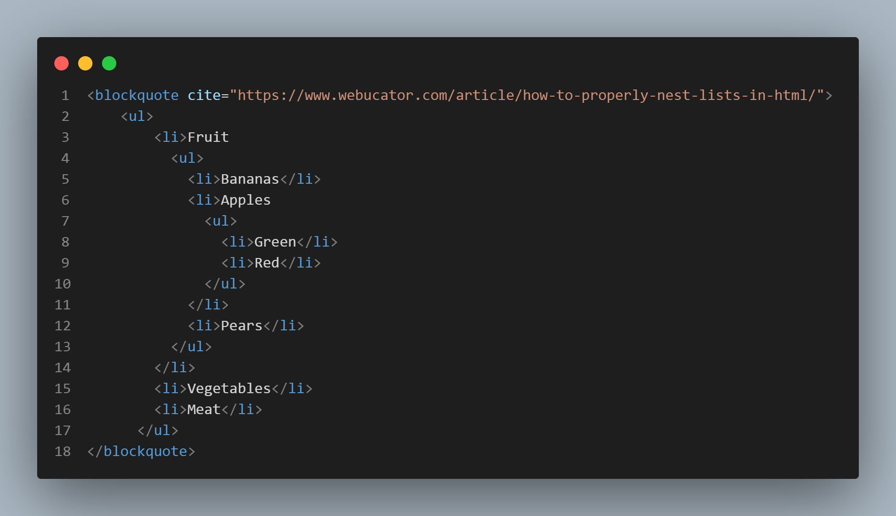
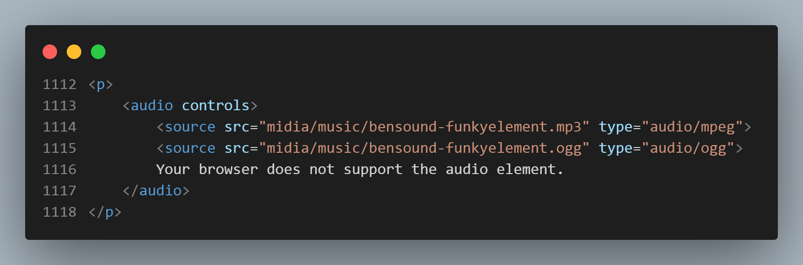

To put any lenght of text (from a single letter to a group of paragraphs) inside a tag:
Just press Ctrl + shift + p then find "wrap with abbreviation", select it with enter and type only the letters that represent the tag you want. Only the letters, without the < and > signs. And enter to finalize. Ready! It's wrapped. The next times you do that, just press ctrl+shift+p and the option will already be there in the recent history and you proceed with the rest of the instructions above.
An ordered list starts with the <ol> tag. Each list item starts with the <li> tag.
Example:
The code looks like that:

This screenshot was obtained by VSCode's CodeSnap extention I have just installed.
Once you start typing the word "type", Emmet gives you the hints:
1.1.1) type="1" The list items will be numbered with numbers (default)
Example:
1.1.2) type="A" The list items will be numbered with uppercase letters
Example:
A syntax example taken from Type A:

1.1.3) type="a" The list items will be numbered with lowercase letters
Example:
1.1.4) type="I" The list items will be numbered with uppercase roman numbers
Examnple:
1.1.5) type="i" The list items will be numbered with lowercase roman numbers
Examnple:
start attribute:The code stays this way:
The reversed attribute is a boolean attribute. When present, it specifies that the list order should be descending (9,8,7...), instead of ascending (1, 2, 3...).
Example:
Syntax example:

The HTML <ul> tag defines an unordered (bulleted) list. (Same syntax as <ol>).
Example:
See how the nested list code is:
Just to show the feature I set the start of the "new ones" to "5", meaning the 5th letter of the sequence.
And I invented "Fort1" and "Fort2" just to show you that the unordered nesting cause a progressive indentation. Like the fruits in "nested lists 1" above.
A description list is a list of terms, with a description of each term.
The <dl> tag defines the description list
The <dt> tag defines the term (name)
And the <dd> tag describes each term:
Example (I've set a 100px margin left to indent the whole example):
Syntax example:

Note that the example is not indented because the code is indented. It's because of the 100px margin I have set.
"Links are found in nearly all web pages. Links allow users to click their way from page to page". (w3schools)
More than that, the <a> HTML anchor element, with its href attribute, can create hyperlinks to:
MUCH more can be said about links and the <a> tag and you may read it at MDN Web Docs, but here we will stick to the following:
This kind of link is made to an absolute URL (includes the "https://www" part). Example:
You can access my public repository at Github by clicking here.
The HTML element:
<a href=""></a>
a means anchor and href means hypertext reference.
<a href="the URL comes here">and the text that will become hyperlink comes here</a>
As you can see in the code below, there are a "target" and a "rel" attributes, meaning:
Check the code:

This kind of link is made to a relative URL (without the "https://www" part).
Just click here to go there.
And here you go to a page stored in the "new-folder".
a) First, you use an id to give an unique name to the destination point of the future link.

b) And soon after that you make the link through the usual <a> tag, pointing the hypertext reference (href) to the id through a # plus the name of the id.

From here you can download a PDF book from Curso Em Vídeo about the Internet History.
This helps to improve performance across different devices. Responsive images are just one part of responsive design, a future CSS topic for us to learn.
We will learn how to use features like srcset and the <picture> element to implement responsive image solutions on websites.
After applying the HTML elements below, open this page in different devices such as a PC, a tablet or a cell phone to see the magic working. If you don't have several devices in hand, just gradually shorten/enlarge the size of your browser.
You can check the details of this feature at MDN Web Docs.
There are two ways of inserting audio into your page:
<audio> tag.<audio> plus <source> tags.<audio> tagThis is "Dubstep", from Bensound:

<audio> plus <source> tags
The <source> element allows you to specify alternative audio files which the browser may choose from. The browser will use the first recognized format.
And here you have "Funkyelement", also from Bensound:
Suppose I had an alternative "ogg" oudio format for this song (which I don't, as you will see in the code. I just staged the snippet to print the image as an example). I would put it just below my main option, which now is the "mp3". If your browser for any reason would not recognize the mp3 file, it would automatically play the ogg one.

<video>; element.Before anything, be careful! Using this element to embed videos may cause a heavy increase of traffic costs to your website. Read more at Wave.video
To show a video in HTML, use the <video> element:
Example
The controls attribute adds video controls, like play, pause, and volume.
The poster attribute shows a cover for the video before the first frame.
The <div class="entity"> puts the video inside a purple box. It's a CSS style I've used some times in this page.
"It is a good idea to always include width and (I would say OR) height attributes. If height and width are not set, the page might flicker while the video loads". (w3schools)
Anyway, I have set here ONLY the width (at 30%) to avoid disturbing the original width x height proportion. The snippet image above is just an example copied from w3schools and placed in my code for some minutes. And I have no "ogg" video file either.
The <source> element allows you to specify alternative video files which the browser may choose from. The browser will use the first recognized format.
The text between the <video> and </video> tags ("Your browser does not support the video tag.") will only be displayed in browsers that do not support the <video> element.
To start a video automatically when the page is loaded, use the autoplay attribute after the width and height parameters, instead of "controls
Note: Chromium browsers do not allow autoplay in most cases. However, muted autoplay is always allowed.
You can also add the loop attribute o the video element to keep the video running again and again.
For complete detais about the video element, check MDN Web Docs.
Video from:"https://www.pexels.com/pt-br/video/asfalto-barco-bote-canal-5380467/" Author: Rulo Davila, at Pexels
Poster picture: Photo by Bicanski at Pixnio.
Teacher Guanabara advices us to use Handbrake video transcoder app to make different versions of our video, but the app doesn't run in my 8.1 Windows. So I'll pretend I have an OGV video just to give you an example of how the code gets.
The basic HTML structure for embedding videos is:
<iframe src=”URL’></iframe>
This snippet of code helps display the video on your website. It pulls the video from its original source, without actually “forcing” you to host it on your website. This implies that you won't have to worry that a video will affect your website load time, and it also opens up an array of choices between various video hosting services that best suit your needs.
In a few words, it improves your SEO rating. And if you embed a video from your own YouTube channel it HIGHLY improves your SEO rating, as Guanabara says in the video below.
One simple way of embedding a video is from YouTube:
Here's a video embeded this way:
Read more about it at w3schools.
An inline style may be used to apply a unique style for a single element. To use inline styles, add the style attribute to the relevant element (h1, h2, p, span, div, etc.). The style attribute can contain any CSS property.
Example:
This is a paragraph.
This is the code for the given example:

The disadvantage of this method is that you have to repeat the style in every element of the website, one by one.
The advantage is that it personalizes a given element.